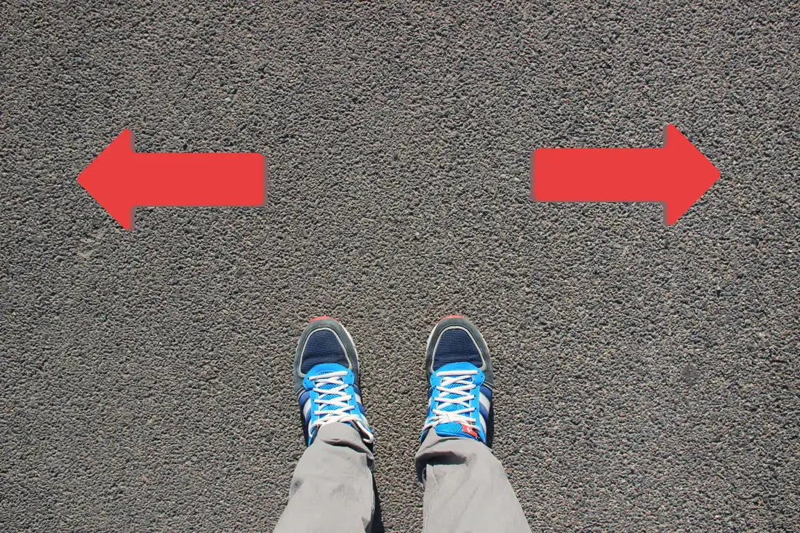
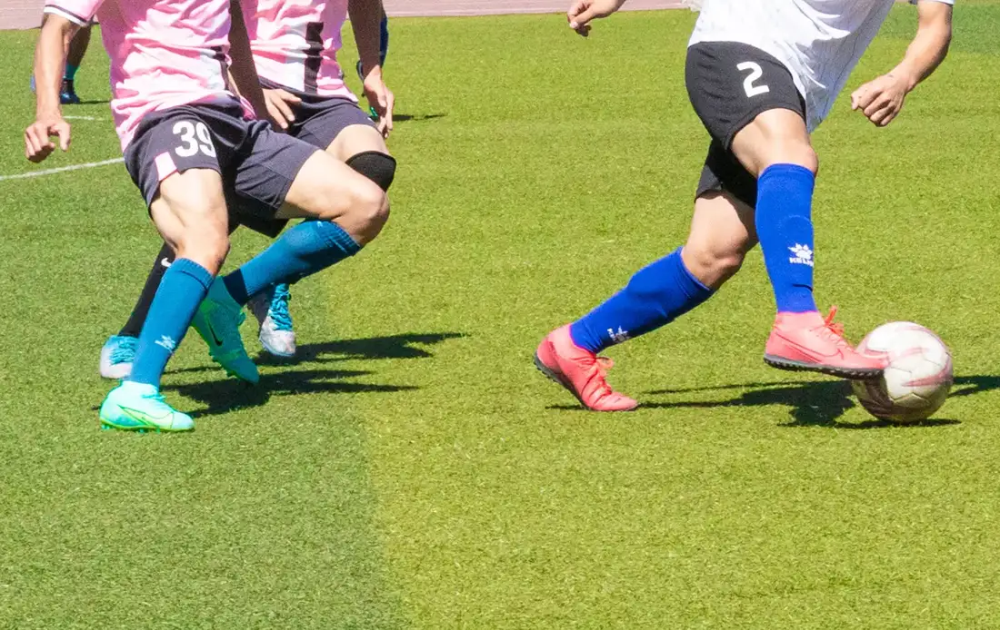

Giáo trình HSK 2 · Lesson 7他篮球打得很好
Tā lánqiú dǎ de hěn hǎo
Anh ấy chơi bóng rổ rất giỏi
Mục tiêu bài khóa
Sau bài học, người học có thể mô tả trạng thái của hành động, dùng cấu trúc 一……就…… và nói về các môn thể thao thường tập.
动作进行的状态Dùng bổ ngữ trạng thái với 得 để nhận xét một hành động được thực hiện như thế nào.
“一……就……”Diễn đạt hai hành động xảy ra liền nhau bằng cấu trúc 一……就…….
常做的运动Trao đổi về sở thích và khả năng trong các hoạt động thể thao thường ngày.
Khởi động · 热身
Chọn từ rồi chọn đúng hình ảnh tương ứng.
💡 Hãy chọn một từ trước.
Từ vựng · 生词
Mặt trước có từ, nghĩa, loại từ và nút phát/dừng. Mặt sau có hình ảnh và ví dụ theo PowerPoint.
从
cóng
từ; từ phía
giới từChạm vùng trống để lật thẻ

从我家到学校很近。 🔊Cóng wǒ jiā dào xuéxiào hěn jìn.
Từ nhà tôi đến trường rất gần. 他昨天从北京回来了。 🔊Tā zuótiān cóng Běijīng huílai le.
Hôm qua anh ấy đã trở về từ Bắc Kinh. 往
wǎng
về phía; hướng đến
giới từ / động từChạm vùng trống để lật thẻ

往前走，学校就在前面。 🔊Wǎng qián zǒu, xuéxiào jiù zài qiánmiàn.
Đi về phía trước, trường học ở ngay phía trước. 往外看，那是谁？ 🔊Wǎng wài kàn, nà shì shéi?
Nhìn ra ngoài xem, đó là ai? 跑
pǎo
chạy; chạy bộ
động từChạm vùng trống để lật thẻ
他每天早上六点起床跑步。 🔊Tā měitiān zǎoshang liù diǎn qǐchuáng pǎobù.
Mỗi sáng anh ấy thức dậy lúc sáu giờ để chạy bộ. 别往外跑了，今天天气不好。 🔊Bié wǎng wài pǎo le, jīntiān tiānqì bù hǎo.
Đừng chạy ra ngoài nữa, hôm nay thời tiết không tốt. 打
dǎ
chơi; đánh
động từChạm vùng trống để lật thẻ
我很喜欢打篮球。 🔊Wǒ hěn xǐhuan dǎ lánqiú.
Tôi rất thích chơi bóng rổ. 你想和我一起打球吗？ 🔊Nǐ xiǎng hé wǒ yìqǐ dǎ qiú ma?
Bạn có muốn chơi bóng cùng tôi không? 篮球
lánqiú
bóng rổ
danh từChạm vùng trống để lật thẻ
我喜欢打篮球。 🔊Wǒ xǐhuan dǎ lánqiú.
Tôi thích chơi bóng rổ. 走，一起去打篮球吧！ 🔊Zǒu, yìqǐ qù dǎ lánqiú ba!
Đi thôi, cùng đi chơi bóng rổ nhé! 运动
yùndòng
thể thao; vận động
danh từ / động từChạm vùng trống để lật thẻ
运动对身体很好。 🔊Yùndòng duì shēntǐ hěn hǎo.
Vận động rất tốt cho cơ thể. 你每天运动多长时间？ 🔊Nǐ měitiān yùndòng duō cháng shíjiān?
Mỗi ngày bạn tập thể dục bao lâu? 踢
tī
đá; sút bằng chân
động từChạm vùng trống để lật thẻ

我喜欢踢足球。 🔊Wǒ xǐhuan tī zúqiú.
Tôi thích đá bóng. 请不要踢桌子。 🔊Qǐng bú yào tī zhuōzi.
Xin đừng đá vào bàn. 足球
zúqiú
bóng đá
danh từChạm vùng trống để lật thẻ
你喜欢踢足球吗？ 🔊Nǐ xǐhuan tī zúqiú ma?
Bạn có thích đá bóng không? 弟弟每个星期天都踢足球。 🔊Dìdi měi ge xīngqītiān dōu tī zúqiú.
Em trai đá bóng vào mỗi Chủ nhật. 球
qiú
bóng; quả bóng
danh từChạm vùng trống để lật thẻ
爸爸喜欢踢足球。 🔊Bàba xǐhuan tī zúqiú.
Bố thích đá bóng. 你喜欢踢足球还是打篮球？ 🔊Nǐ xǐhuan tī zúqiú háishi dǎ lánqiú?
Bạn thích đá bóng hay chơi bóng rổ? 得
de
dùng nối động từ với bổ ngữ trạng thái
trợ từChạm vùng trống để lật thẻ

哥哥跑得很快。 🔊Gēge pǎo de hěn kuài.
Anh trai chạy rất nhanh. 天中篮球打得很好。 🔊Tiānzhōng lánqiú dǎ de hěn hǎo.
Thiên Trung chơi bóng rổ rất giỏi. 跑步
pǎobù
chạy bộ
động từChạm vùng trống để lật thẻ
姐姐喜欢跑步。 🔊Jiějie xǐhuan pǎobù.
Chị gái thích chạy bộ. 我每天早上都在学校跑步。 🔊Wǒ měitiān zǎoshang dōu zài xuéxiào pǎobù.
Mỗi sáng tôi đều chạy bộ ở trường. 游泳
yóuyǒng
bơi; bơi lội
động từChạm vùng trống để lật thẻ
今天很热，我想去游泳。 🔊Jīntiān hěn rè, wǒ xiǎng qù yóuyǒng.
Hôm nay rất nóng, tôi muốn đi bơi. 你喜欢游泳吗？ 🔊Nǐ xǐhuan yóuyǒng ma?
Bạn có thích bơi không? 游
yóu
bơi
động từChạm vùng trống để lật thẻ
哥哥喜欢游泳，他游得很快。 🔊Gēge xǐhuan yóuyǒng, tā yóu de hěn kuài.
Anh trai thích bơi, anh ấy bơi rất nhanh. 小鱼在水里游。 🔊Xiǎoyú zài shuǐ lǐ yóu.
Con cá nhỏ đang bơi trong nước. 爱好
àihào
sở thích; yêu thích
danh từ / động từChạm vùng trống để lật thẻ
你的爱好是什么？ 🔊Nǐ de àihào shì shénme?
Sở thích của bạn là gì? 我的爱好是踢足球。 🔊Wǒ de àihào shì tī zúqiú.
Sở thích của tôi là đá bóng. 开始
kāishǐ
bắt đầu; khởi đầu
động từ / danh từChạm vùng trống để lật thẻ
他每天九点开始工作。 🔊Tā měitiān jiǔ diǎn kāishǐ gōngzuò.
Mỗi ngày anh ấy bắt đầu làm việc lúc chín giờ. 从今天开始，我要学游泳。 🔊Cóng jīntiān kāishǐ, wǒ yào xué yóuyǒng.
Từ hôm nay, tôi sẽ học bơi. Bài khóa · 课文
Ảnh ngữ cảnh bên trái, hội thoại bên phải. Bài khóa 4 trình bày đúng dạng đoạn nhật ký.
Tương tác đóng vai
Chọn bài khóa và nhân vật. Lời của vai đã chọn sẽ được ẩn; phần này chỉ hiển thị chữ Hán.
Củng cố từ vựng
Lật đáp án từ vựng rồi hoàn thành câu hỏi đọc hiểu.
Câu hỏi đọc hiểu
Mẫu câu cần nhớ: 楼下站着一个人。她经常跑上来找我玩。他篮球打得很好！